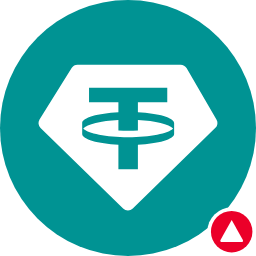

The Great River flows at $1.00 · Dólar sintético TRC-20 · TRON mainnet · peg 1:1 via SunSwap V2
TJLYPEWh2dBfm74aDBk4tvkHMgv8jLCs5k
ADN â WTRX · SunSwap V2 · preço US$ 1,00
6 decimais · 100.000.000.000 ADN (fixo, sem mint público)
DexScreener â ADN/WTRX
Preço on-chain: US$ 1,000000
setName, setSymbol â cada chamada emite evento)batchTransfer para distribuição auditável; reservas da pool 100% públicas no Tronscan